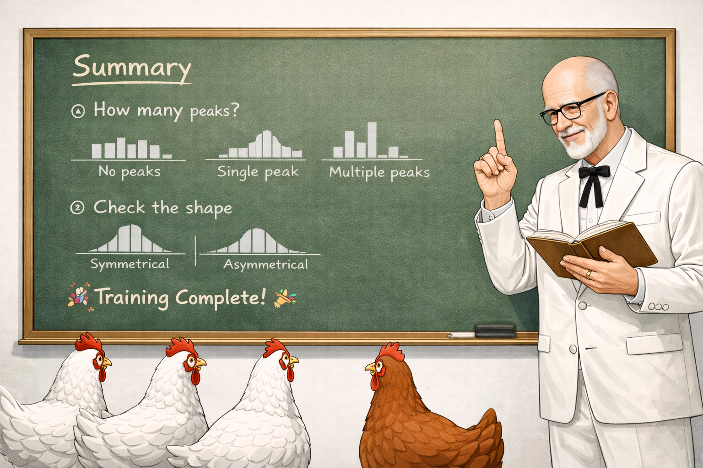

Figure 6. The Colonel shares his wisdom on interpreting frequency distributions.
Well now, let me tell you something. Looking at a frequency distribution is like sizing up your flock. You want to know if there's one main group or several, and whether things are balanced or leaning one way.
After thirty years of raising chickens, I've learned that patterns tell a story. When most of your birds cluster around the same weight, that's a good sign. Your feed's working and your flock is healthy. But when you see two separate groups? That's worth investigating.
Same goes for balance. A nice symmetrical spread means things are running smooth. But if you've got a long tail stretching out one direction, well, that's nature's way of telling you something interesting is going on.
Get a sense of where the bars are tallest and how they are arranged.
Are there no clear high points, one main peak, or multiple separate peaks?
Imagine a line through the center. Do both sides look roughly like mirror images?
🎉 Training complete!
You are now ready to interpret frequency distributions like a profesional Head Chicken Checker.